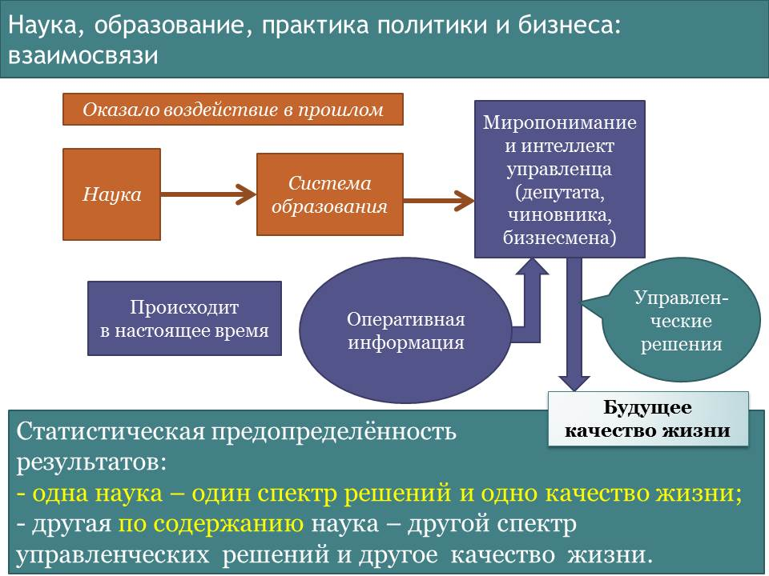

Том 5 · osnovy-sociologii-tom-5.pdf · стр. 5 (кандидат) · Кандидат страницы PDF; требуется сверка · источник: PDF/DOC данной редакции.
Содержит авторские утверждения; их фактическая достоверность оценивается отдельно.
Глава 15. К вопросу о «каноне» постановки и решения задачи перехода к экотехнологической цивилизации
Постановка и решение задачи перехода к экотехнологической цивилизации в интересах дальнейшего развития культурно своеобразных обществ и человечества в целом, рассматриваемой как задача управления по полной функции природно-общественно-хозяйственной системой, предполагает организацию информации в психике и мышление в соответствии с матрицей, ранее представленной в разделе 6.13 на рис. 6.13-4:
Может быть высказано возражение, что к этой задаче невозможно подступиться без владения инструментарием так называемых «больших данных» (англ. — «Big Data») и соответствующего компьютерного обеспечения1. Однако такая позиция ошибочна: «большие данные» — всего лишь совокупность методов и оборудования, предназначенных для сбора и обработки больших массивов данных, относящихся к разным сферам деятельности и интерпретация которых вариативна. Совокупность технологий больших данных ориентирована на сбор, пересылку и обработку в темпе реального времени колоссальных объёмов быстро изменяющейся разнородной информации — как упорядоченной в некие структуры, так и не упорядоченной. Термин «обработка» в данном случае подразумевает использование больших данных в интересах решения задач предельно широкого спектра — от узко технико-технологических до глобально-политических. Из этого разнообразия задач и проистекает вариативность интерпретаций большинства из разнородных массивов больших данных соответственно целям каждой из задач, обслуживаемых этим инструментарием.

Рис. 6.13-4. Динамическое программирование,
его символизм и вхождение в управление
Но любой инструментарий, при всей его необходимости (подчас реально либо иллюзорно безальтернативной) для решения соответствующих задач, — в аспекте информационно-алгоритмического обеспечения деятельности, осуществляемой с его помощью, относится к обобщённым средствам управления третьего приоритета, и в пределах совокупности средств управления третьего приоритета инструментарий подчинён концепциям (канонам) постановки и решения задач (теориям), для практического решения которых он привлекается в русле течения объемлющих процессов и решения объёмлющих задач. Теории (концепции, «каноны»), в свою очередь, являются следствием применения обобщённых средств управления более высоких приоритетов: первого — методологии познания и творчества и второго — матрично-алгоритмического. Это касается и инструментария больших данных в аспекте привлечения его к решению задачи перехода от нынешней технократической цивилизации к экотехнологической с целью создания условий для последующего развития человечества и перехода к биологической цивилизации.
Т.е. привлечение любого инструментария для решения тех или иных задач предполагает:
- Сначала — выработку «канона» (это — применение обобщённых средств управления первого и второго приоритетов), на основе которого предполагается решать задачи определённого класса. «Канон» может присутствовать в деле в одном из двух видов:
<!-- -->
В форме некоторого набора «само собой разумений», которые друг с другом могут быть не всегда связаны напрямую, но в совокупности более или менее обстоятельно представляют «канон», который в целом остаётся вне осознания. При этом оглашения «само собой разумений» могут не совпадать с тем, что остаётся в умолчаниях, в результате чего такой «канон» может быть своего рода «троянским конём», в действительности предназначенным для решения иных задач: примером такого рода «канона» решения макроэкономических задач является пресловутый «Вашингтонский консенсус»2 — инструмент криптоколонизации, а равно — порабощения формально юридически суверенных государств.
В форме понятийно определённого изложения следующих тем: разграничения объекта управления и среды, в которой он находится; описание внутренней структуры объекта управления и взаимосвязей составляющих его элементов друг с другом и со средой, с которой взаимодействует объект в процессе управления; целей управления, путей и средств их достижения.
<!-- -->
- Потом — инструментарий для практического решения частных задач в составе комплексной задачи и адаптация этого инструментария к канону решения комплексной задачи — задачи, объемлющей все составляющие её частные задачи.
«Канон» в любом из двух его вариантов представления выражает философию решения определённой задачи, процесс управления которой является вложенным по отношению к некоторой совокупности объёмлющих процессов и задач в их иерархии (см. раздел 6.13 о методе динамического программирования и его взаимосвязях с Жизнью — Часть 1 настоящего курса). Вследствие этого применение одного и того же прикладного инструментария решения частных задач в соответствии с разными канонами (философиями решения задач) постановки и решения задач одного класса будет различным и будет давать разные результаты — в том числе и взаимоисключающие.
В этом — ключ к разрешению проблем, в том числе и связанных с большими данными, о которых Сьюзен Тиндал пишет в статье по приведённой выше гиперссылке.
Как должно быть понятно читателю, общая структура «канона» постановки и решения задачи перехода к экотехнологической цивилизации в интересах дальнейшего развития культурно своеобразных обществ и человечества в целом как задачи управления представлена в разделе 13.1 на рис. 13.1-1 и 13.1-3, которые мы повторно воспроизводим ниже для удобства читателя.

<span class="smallcaps">Рис. 13.1-1. Обусловленность спектра управленческих решений</span>
<span class="smallcaps">и будущего качества жизни наукой и системой образования</span>
[В оригинальном издании здесь расположена иллюстрация. Не воспроизводится до правовой проверки и решения владельца; см. запись в FIGURES.md.] <!-- figs:osnovy-sociologii-tom-5--image6 --> Излагаемое далее ориентировано на дальнейшую детализацию этого «канона» и освещение проблематики, затронутой в разделе 13.1. Поэтому весь последующий текст следует соотносить с рис. 6.13‑4, 13.1‑1, 13.1‑3, обеими иллюстрациями, вынесенными на обложку настоящего тома, а также с рис. 13.2.2-1, который мы повторно воспроизводим ниже.
<span class="smallcaps">Рис. 13.1-3. Взаимная обусловленность частных управленческих задач</span>
<span class="smallcaps">в ходе реализации концепции устойчивого и безопасного развития</span>
Глава 15 в редакции от 04.02.2016 г.
Природная среда
и зарубежье
Людской сегмент
ноосферы Земли
как совокупность
социально обусловленных эгрегоров
Государственность
как совокупность органов центральной, региональной и местной власти
Население государства как множество людей, принадлежащих к различным социальным группам, различаемым по определённым наборам характеристических признаков каждой из них (т.е. население — взаимовложенность социальных групп = суперсистем)
Природная среда и зарубежье
Бизнес-власть как власть собственников капитала и топ-менеджеров и подчинённый им хозяйственный комплекс
<span class="smallcaps">Рис. 13.2.2-1. Схема взаимосвязей частных процессов управления</span>
<span class="smallcaps">и самоуправления в жизни государства</span>
Вседержительность Божия
Далее «большие данные» — это термин, употребляемый в том значении, которое сложилось в области IT-технологий. См., например, научно-популярную статью: Сьюзен Тиндал. «Большие данные: всё, что вам необходимо знать» (PC Week/RE № 25 (810) 2 октября 2012: http://www.pcweek.ru/idea/article/detail.php?ID=141962).↩
См.:
Ананьин О., Хаиткулов Р., Шестаков Д. Вашингтонский консенсус: пейзаж после битв. — Мировая экономика и международные отношения (МЭМО). 2010, № 12. — С. 15-27. Либо: http://economics.hse.ru/data/2011/02/14/1208909692/2010 МЭМО.pdf.
Вашингтонский консенсус как «мыслеобразующий механизм нового этапа глобализации». — Без указания авторства. Интернет-ресурс «Литература для студентов»: http://www.libsib.ru/sovremennie-problemi-globalizatsi/sovremennie-problemi-globalizatsi/vashingtonskiy-konsensus-kak-misleobrazuiuschiy-mechanizm-novogo-etapa-globalizatsii. Эта публикация повествует о «Вашингтонском консенсусе» именно как о каноне, что видно из её названия.
Пояснения к этой роли «Вашингтонского консенсуса» см. в работе: Величко М.В., Ефимов В.А., Зазнобин В.М. «Экономика инновационного развития. Управленческие основы экономической теории». — М. — Берлин: Директ-Медиа. 2015. (Страница для скачивания файла: http://www.directmedia.ru/book_364343_ekonomika_innovationnogo_razvitija/).↩